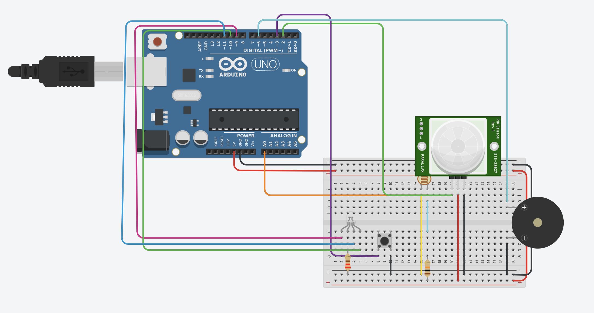

01
Fotoresistencia
Detecta los niveles de luz del ambiente. Cuando existe poca iluminación, el sistema puede activar el LED RGB.
Un sistema de iluminación inteligente diseñado para responder automáticamente a las condiciones del entorno y a la presencia de personas.
IRTRAIlumina combina sensores y componentes electrónicos para crear un sistema capaz de reaccionar ante diferentes situaciones del entorno.
El sistema utiliza diferentes entradas para determinar cuándo debe activar la iluminación o generar una alerta.
Detecta los niveles de luz del ambiente. Cuando existe poca iluminación, el sistema puede activar el LED RGB.
Detecta movimiento y presencia de personas, permitiendo que la iluminación responda ante la actividad del entorno.
Al presionarlo, el sistema activa un buzzer como representación de una señal de alerta o emergencia.
Una representación visual del comportamiento del sistema dependiendo de los estímulos detectados.
Elementos principales utilizados para construir el prototipo.
Sensor que permite detectar cambios en la intensidad de luz del ambiente.
Detecta movimiento mediante cambios en la radiación infrarroja.
Fuente de iluminación capaz de producir diferentes colores.
Permite enviar manualmente una señal al sistema.
Produce una señal sonora cuando se activa el sistema de alerta.
Microcontrolador encargado de procesar las señales de los sensores y controlar las salidas.
Evidencia del prototipo desarrollado y del circuito utilizado para integrar los diferentes componentes.
Prueba física del sistema reaccionando a los estímulos del entorno.
Esquema de conexiones del microcontrolador, fotorresistencia, sensor PIR y demás componentes.

Investigación y documentación utilizada para fundamentar el desarrollo del proyecto.
Análisis tecnológico del parque, eficiencia energética y justificación del uso de Arduino UNO R3 en el proyecto.
El proyecto busca relacionar la tecnología con soluciones eficientes y responsables para el entorno.
IRTRAIlumina utiliza tecnología y automatización para desarrollar una solución innovadora aplicada a un entorno recreativo.
El uso de iluminación controlada mediante sensores puede contribuir a evitar el funcionamiento innecesario de las luces y aprovechar mejor la energía.
Integrante del equipo
Integrante del equipo
Integrante del equipo